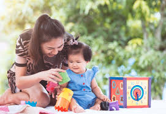

Stimulasi Tumbuh Kembang Bayi
Ada beberapa bentuk stimulasi yang dapat diberikan pada periode emas, sesuai dengan perkembangan usia anak:
1. 0–3 bulan
Memeluk, menggendong, menatap mata bayi, mengajak senyum, meniru ocehan dan mimik muka bayi, membunyikan berbagai suara atau musik secara bergantian, menggantung dan menggerakkan benda berwarna terang atau berbunyi, menggulingkan bayi ke kanan-ke kiri, tengkurap, telentang, serta mengajak bayi mengamati benda-benda dan keadaan di sekitarnya.
2. 3–6 bulan
Bermain petak umpet, mencari sumber suara, menirukan suara dan kata, melihat wajah bayi dan ibu di cermin, melihat-meraih, dan menendang mainan gantung, memperhatikan benda bergerak, serta meraba dan merasakan berbagai bentuk permukaan dan tekstur.
3. 6–9 bulan
Memanggil nama anak, mengajak bersalaman, tepuk tangan, membacakan dongeng, merangsang duduk, serta melatih berdiri sambil berpegangan.
4. 9–12 bulan
Mengulang-ulang nama ibu, ayah, atau kakak, memasukkan mainan ke dalam wadah, minum dari gelas, menggelindingkan bola, melatih berdiri, serta berjalan dengan berpegangan.